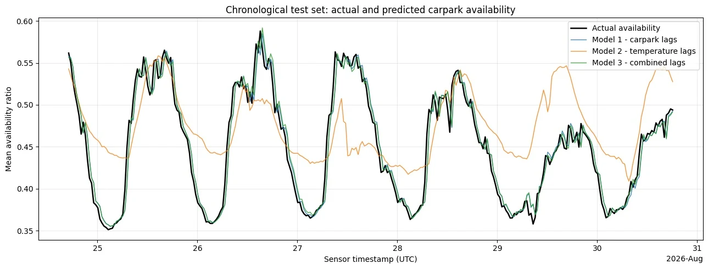

Game Design
Game Design01Game Design / Unity 2D2024.10—2024.11
水滴环游记
把水的三态变化变成玩家的行动语言：同一片空间，因为能力与资源的不同，出现不同的走法。
从玩家的选择，到实验中的反馈，再到生产流程里的数据。这里记录我在不同约束下做过的设计、实现与思考。
Game Design把水的三态变化变成玩家的行动语言：同一片空间，因为能力与资源的不同，出现不同的走法。
 Game Jam
Game Jam在推箱解谜中加入灵体、实体与多实体同步控制，让一次输入成为一组需要提前安排的行动。
 Interactive Simulation
Interactive Simulation把仪器操作、成像概念和 AI 引导连接起来，让显微镜从一台复杂设备，变成可以操作和探索的虚拟实验。
 Undergraduate Coursework
Undergraduate Coursework贯穿三个阶段的课程实践：从照片采集与摄影测量，走向 NeRF 结果展示，再把重建资产带入仿真环境。
 Course Competition
Course Competition把古代算学的知识结构转为可操作的关卡，让勾股、割圆与算术问题进入一段可探索的旅程。
 Tencent
Tencent在《暗区突围》手游参与活动配置与迭代：为艾薇塔活动快速搭建推箱子 Demo，为少前 2 联动局外活动制作文本自动化配置工具。
 NetEase
NetEase在《界外狂潮》的战斗／系统策划实践中，使用项目组 Lua 工具链与 UE 原生蓝图配置血姬的行为状态机，并参与商业化资源配置与效果验收。
 NUS
NUS从 NumPy 梯度检查到 PyTorch 去噪自编码器，比较重建、噪声泛化与压缩表征之间的取舍。
 NUS
NUS在仿真任务中探索 PPO 控制、CBF 安全过滤与部分可观测决策，分别观察目标达成、记忆和约束的作用。

NUS用 MQTT 收集课程分配的温度与停车数据回放，经过校验、清洗与可视化，再进入回归分析。